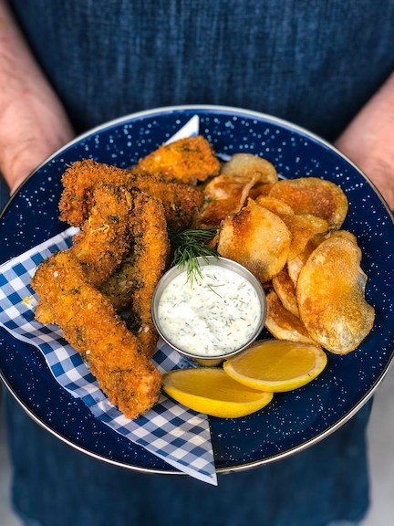
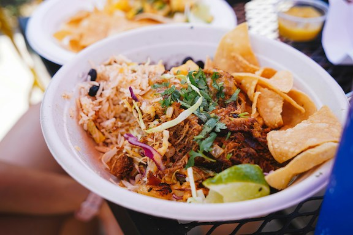

Ingredients
- 3 chicken breast slices
- 2 eggs
- Panko bread crumbs
- Olive oil
- Garlic salt
- Salt and pepper
- Lemon
Preparation
- Pound chicken breast into very thin slices
- Season with garlic salt, salt, and pepper
- Whisk eggs in a bowl
- Place panko breadcrumbs in another bowl
- Cover pan with olive oil and place on medium heat
- Wait a couple minutes for oil to heat up
- Dip chicken slices into eggs and then directly into panko crumbs
- Place breaded chicken slices onto pan for about 2-3 minutes on each side, or until golden brown
- Sprinkle lemon juice over chicken and enjoy! I usually eat this with a serving of pasta and vodka sauce.

Ingredients
- 1/2 pound ground chicken
- 1/2 packet of taco seasoning
- 1 pack of Trader Joe's instant brown rice
- Shredded mozzarella cheese
- Handful of cherry tomatoes, finely chopped
- 1/2 mini cucumber, finely chopped
- 1 head romaine lettuce, finely chopped
- Guacamole
- Sour cream
- Garlic salt
- Salt and pepper
Preparation
- Drizzle pan with avocado oil and place on medium heat
- Season ground chicken with garlic salt, salt, and pepper
- Cook on pan over medium-low heat, stirring occasionally
- Once chicken is fully cooked, mix in taco seasoning with some water and stir
- Heat up instant brown rice in microwave
- Chop up tomatoes, cucumber, and lettuce
- Assemble bowl in following order: rice, seasoned chicken, handful of shredded mozzarella cheese, lettuce, cucumber, and tomatoes
- Season with salt and pepper and top off with a spoonful of guacamole and sour cream
- Enjoy this burrito bowl with tortilla chips!